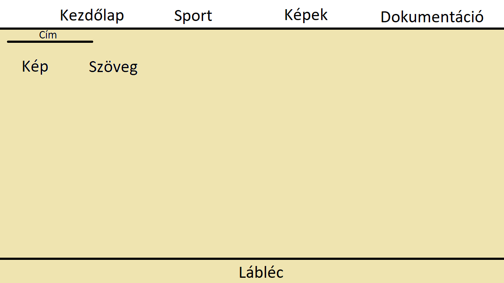

Leírás
A weblap készítés kezdetekor az alap ötletem a következő volt:
A tervem az volt, hogy a weboldalon 3 fő terület legyen:
- Első, ahol a gombok találhatók, fejléc
- Második, ahol a gombra kattintva megjelennek a képek, szövegek
- Harmadik, a lábléc
Fejléc
A weblap fejlécére sikerült megvalósítanom az alap ötletem. Elhelyeztem rajta 4 gombot ami 4 különböző oldalra visz. A színeket nehez tudtam kiválasztani, de szerintem nagyjából összeillenek.
Tartalom
A különöző oldalakon a különböző tartalmakat más módon szerettem volna elhelyezni, ez sikerült nagyjából, azonban az elvárásaimnak sajnos nem felelnek meg. :(
Lábléc
Arra, hogy a lábléc mit tartalmazzon, nem volt konkrét ötletem, így hát csak a személyes instagramom helyeztem el rajta.
Az ötletemnek ezen részét sikerült megvalósítani, azonban a fejemben máshogy állt össze az egész ötlet. Probálkoztam a képek stílusos elhelyezésével. Elhelyeztem képeket amelyre ,ha rákkatint a felhasználó egy másik oldalra kerül át.
Nagy kihívást okozott a feladat mivel sosem csináltam még weboldalt. Azonban probálkoztam igényesen megcsinálni.
Nehézségek
A munkám során rengeteg nehézséggel kellet szembe néznem. Kezdjük azzal, hogy egy teljesen új dolgot kellet létrehoznom. Aztán szembesültem azzal, hogy a hibákat nem jelzi a program, ezért nekem kellett megkeresnem őket, és kijavítanom, ez rengeteg időt elvett. A képeket úgy akartam elhelyezni, hogy lépkedni lehessen köztük, azonban a kód nem futott le és nem találtam meg mi volt a hiba.
A program megismeréséhez youtube videókat néztem, és sokat segített az Ms Teams-re beküldött segédlet is.